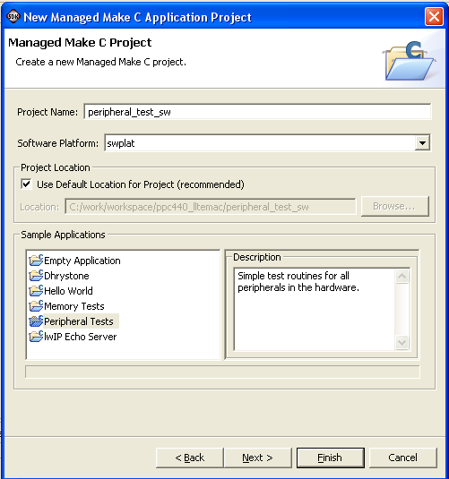

SDK application projects
In the New Managed Make C Application Project page of the New Project wizard, select a name for the project, the software platform, and the sample application. You can also enter a new path for your project by unselecting the Use Default Location for Project checkbox and specifying the new path in the Location field.

The New Managed Make C Application Project page contains the following items:
| Name | Function |
|---|---|
| Project Name | In this field, specify the name of the project. |
| Software Platform | Select the software platform for which you want to create an application. |
| Use Default Location for Project | When this check box is selected, SDK creates the new project in the default workspace location. |
| Location | If Use Default Location for Project check box is not selected, use this field to specify the location where the project is to be created. |
| Sample Applications | Select from a list of sample applications for the software and hardware platform. |

New Software Platform Project dialog box
Managed Make, Select a
Project Type
Managed Make, Referenced
Projects
Managed Make, C/C++ Indexer
Copyright © 1995-2009 Xilinx, Inc. All rights reserved.